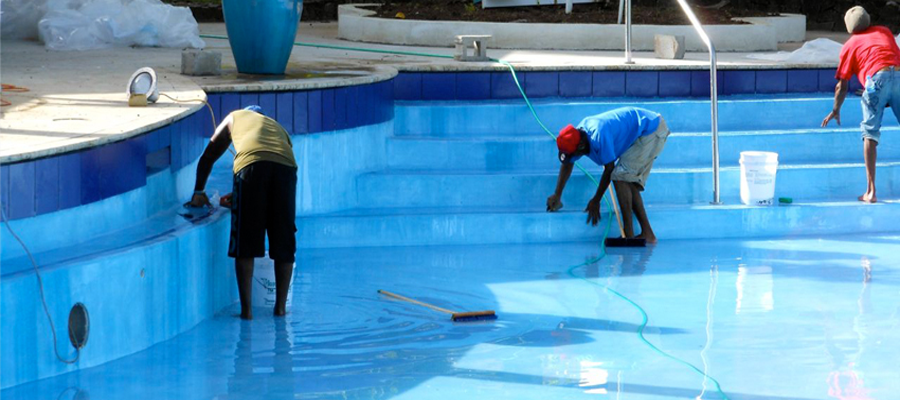

Campus Life
Here at Durantite University, students and faculty participate in a wide variety of extracarricular activities. Unlike other colleges, however, our teams and groups all come with that patented "Learn-Don't-Earn" mentality.
Students are encouraged to engage in all sorts of group activities, from free-range chicken rearing to interpretive mediterranean salsa making. Here, they will be partnered with professionals who are simply dying to make use of their raw talent and ambition and teach them valuable trades for the low, low price of free. Some may call it "unpaid labor," but we prefer to think of it as "life experience."
|
Football and Yardwork 
|
Football and Yardwork is an established tradition at Durantite University. Here, students will participate in various team building activities both on and off the field. In addition to the traditional football games, students will find themselves cleaning highways, laying pavement, and planting tress to make our community a shining image of glory. |
|
Glee and Invetory |
Glee and Inventory is a way for students to give to the community through song and product stocking. After weeks of practicing high notes and high shelves, the students will take a nation-wide tour of numerous super markets to entertain shoppers and help stockers. |
|
Swimming and Cleaning  |
Swimming and cleaning club teaches students that there is always a price for services rendered. In exchange for allowing our students to use their pools, local YMCA's have granted our students access to all their facilities for the price of pool maintenance. Once per week, students will work together to scrub the pool, replace the filters, and perform checks on chemical balance. |